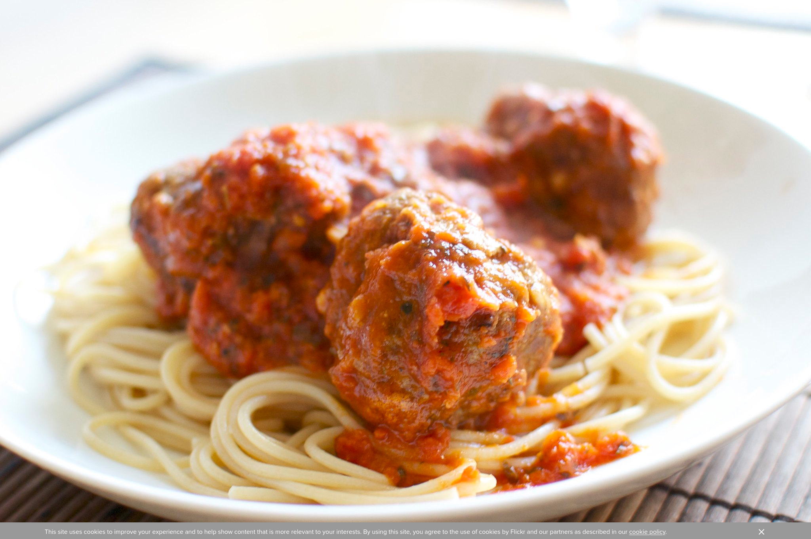

Sauce and Meatballs

Description
This is a family recipe for Italian sauce and meatballs. The sauce is tomato based with Italian sausage and roast. Don't forget your spaghetti and bread!
Ingredients
Sauce
- 1/2 - 3/4 lb. salt pork
- 6 links sausage (optional)
- 3 - 5 lb. roast
- 2 - 3 cloves of garlic
- 3 large cans of tomato paste (12 oz. can)
- 1 gallon can crushed tomato (6 lb. 9 oz.
Meatballs
- 8 lb. hamburger
- 4 - 5 cloves of garlic
- parsley
- 3 - 4 eggs
- salt, pepper
Steps
Sauce
- Cut off salt pork
- Chop garlic (2 - 3 cloves) into salt pork until smooth.
- Cut roast into large chunks (salt and pepper to taste) and brown in melted salt pork.
- Add can of crushed tomatoes. Add little water to rinse out can.
- Add 3 cans tomato paste
- (Optional) Brown sausage in separate pan, add to pot.
- Simmer over low heat stirring occasionally until done. (All meat will be cooked through and oil will collect on top.)
Meatballs
- Cut garlic (4 - 5 cloves) into hamburger, add minced parsely.
- Add 3 or 4 whole eggs.
- Salt and pepper to taste.
- Mix thoroughly by hand.
- Roll by hand into meatballs.
- Brown in pan and add to saucepot.